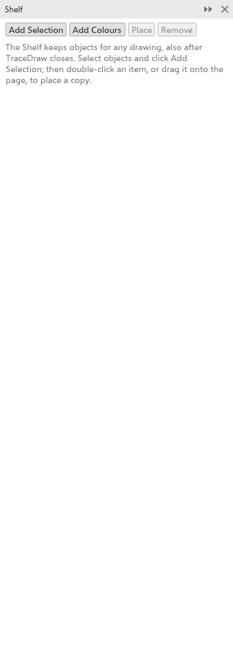
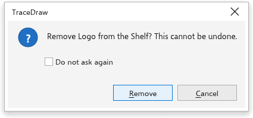

The Shelf
The Shelf panel keeps objects and colors apart from any drawing, so you can place them in this drawing or another one, today or after TraceDraw restarts: logos, stamps, frames, a set of colors. Open it from Window > Panels, or right-click a selection and choose Add to Shelf.

Adding to the Shelf
- Select objects and click Add Selection. The item is named after the object (its name, or what it is), or "n objects". Symbols become plain objects, and the object styles they use go along.
- Click Add Colours to keep the colors of the drawing's document palette and its color styles as one item.
The Shelf holds up to 500 items.
Placing an item
- Drag an item onto the drawing to place a copy under the pointer.
- Double-click an item, or choose it and click Place, to place a copy in the middle of the view.
The copies go on the active layer and are selected; one undo removes them. A color item adds its colors to the document palette and its color styles to the drawing.
Arranging items
- Click an item to choose it. Right-click it for Place, Rename and Remove.
- Drag an item onto another to move it to that place.
Removing an item
Choose an item and click Remove. Removing cannot be undone, so TraceDraw asks first: click Remove to confirm or Cancel to keep it. Tick Do not ask again to remove items without asking; to be asked again, turn on Before an item is removed from the Shelf on the Warnings page of the global options.

Where the Shelf is kept
On the desktop, the Shelf is a file in your preferences folder. In the browser, it is kept in that browser's storage, which holds only a few megabytes, so large bitmaps may not be kept.